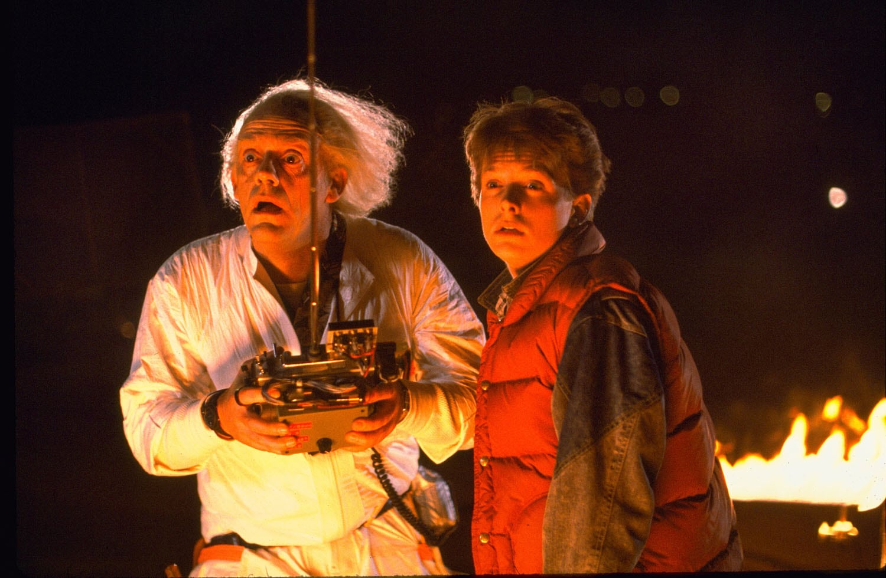
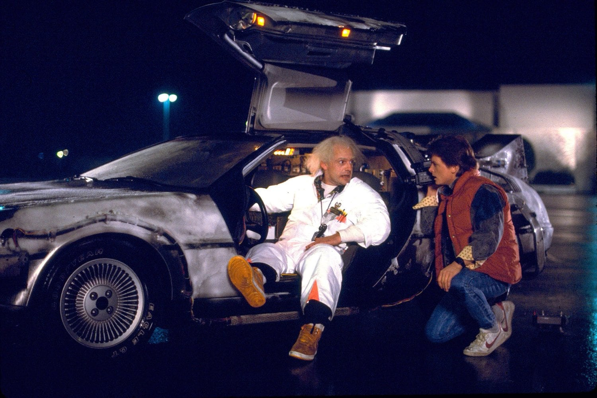
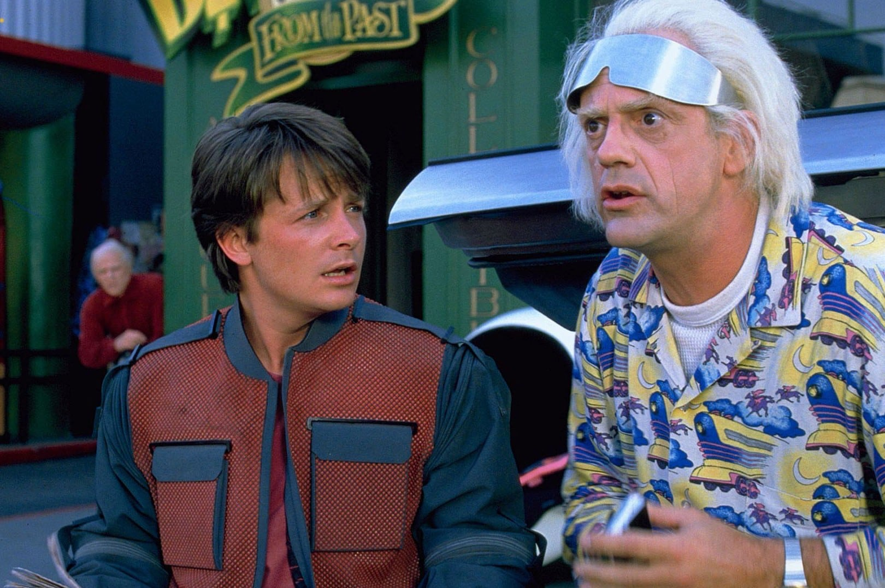
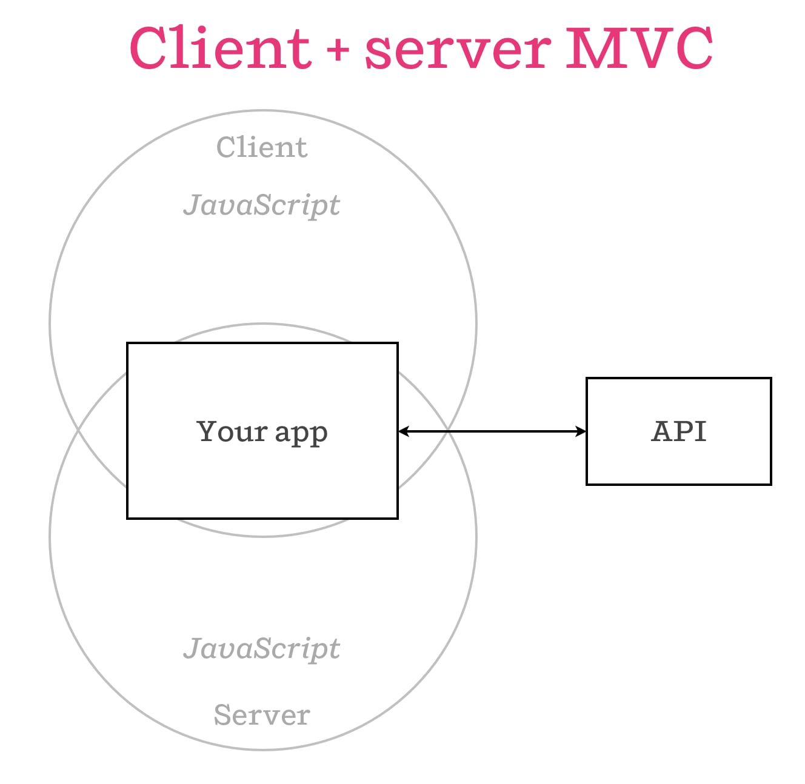
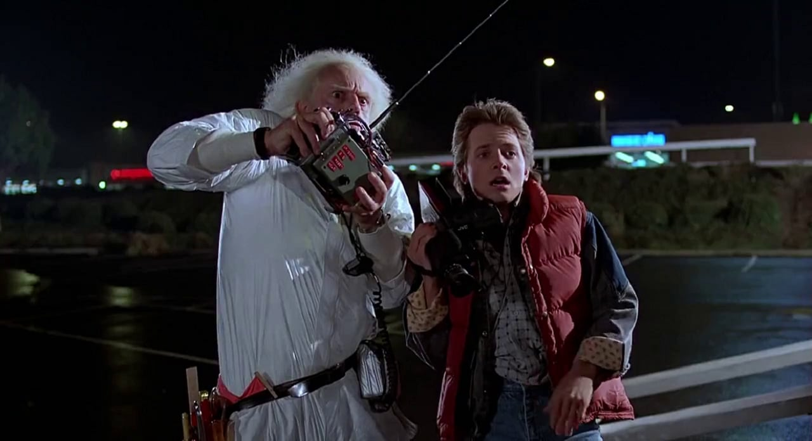
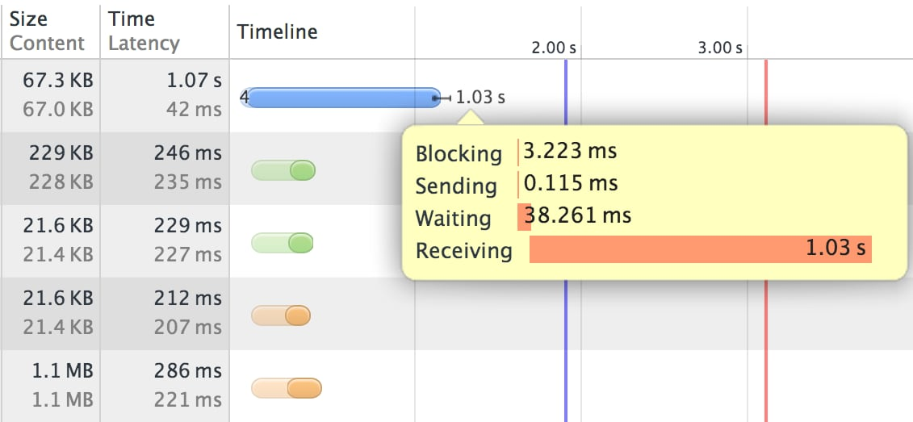
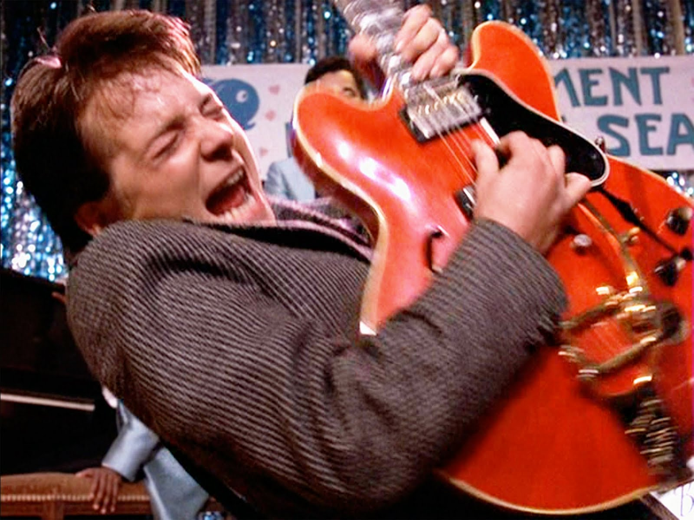

Изоморфный JavaScript – Будущее уже здесь

Изоморфный JavaScript

Будущее уже здесь
Денис Речкунов, Flamp
«Мартин, в будущем

JavaScript изоморфный!»
Что такое изоморфный JavaScript код?
- Исполняется в различных окружениях
(нам важен сервер и браузер)
- Гарантирует одно поведение
- Справляется с разностью окружений через абстракции
Что он нам даёт?
- Мы можем создать изоморфный Web UI
- Который будет строить HTML на сервере для SEO
- Работать как Single Page Application в браузере
- Получим единую языковую среду — JavaScript
- Максимально переиспользуем код
- Получим прирост производительности на старте (ms vs sec)
Что он нам не даёт?
- Не работаем с хранилищем
- Как правило, работаем с RESTful API
- Не включает код для обеспечения безопасности
- Чаще всего это только Web UI
27 мая 2009 года вышел релиз
Автор — Райан Дал, разработчик из Joyent
В 2011 году вышел релиз сборщика
Автор — Джеймс Холлидей (substack)
Словно Делориан для изоморфного JavaScript
Люди начали его использовать
В своих проектах
18 октября 2011 появился пост Nodejitsu

"Scaling Isomorphic Javascript Code"
9 ноября 2011 nodejitsu представляет фреймворк
16 июня 2012 года Yahoo релизит фреймворк Mojito
Но термин "изоморфный"
Стал популярным благодаря Спайку Брехему из Airbnb
11 ноября 2013 появляется пост

"Isomorphic JavaScript: The Future of Web Apps"
Позже Спайк Брехм выступает на JSConf 2014
с докладом "Building Isomorphic Apps"

Как добиться изоморфизма?
Нужно решить ряд проблем
- Разный рендеринг
- Зависимость от окружения
- Запросы за данными к RESTful API по-разному
- Собирать серверный код для браузера
Virtual DOM (на сервере)
- Имитация DOM для фронт-енд фреймворка на сервере
- Приложение применяет изменения к эталонному DOM
- Происходит сериализация в строку HTML
- HTML уходит в браузер
Virtual DOM (в браузере)
- Приложение делает изменения в Virtual DOM
- Состояние Virtual DOM сравнивается с DOM
- При найденном отличии применяется поэлементный patch к DOM
- Используется в React
Мартин не в восторге от Virtual DOM
Template Helpers (на сервере)
- Берем шаблонизатор, например Handlebars
- Определяем Helper, который будет рендерить View с данными
- При вызове хелпера запрашиваем данные для шаблона
- Рендерим шаблон с данными, создавая элемент-обертку с меткой
- Когда отрендерили все View – отдаем HTML браузеру
Template Helpers (в браузере)
- Компилируем шаблоны для браузера
- Клиентский код привязывается к помеченным элементам-обёрткам
- Обновляем поддеревья DOM (каждую View полностью)
Мартин по-прежнему не сильно рад
Прогрессивный рендеринг (на сервере)
- Используем кастомные тэги HTML
- Используем Node.js Streams API и реализуем Transform Stream
ourTransform.pipe(response).end(root.render());- Transform Stream ищет наши тэги в потоке HTML
- Если нашел—рендерит в них соответствующий шаблон
- Который пропускается через такой же Transform Stream
- Весь отрендеренный HTML сразу порциями уходит в браузер
Когда у вас прогрессивный рендеринг

Прогрессивный рендеринг (в браузере)
- Компилируем шаблоны для браузера
- Используем привязки клиентского кода по нашим тэгам HTML
- Обновляем поддеревья DOM (каждый HTML-тэг полностью)
- Используется в Catberry.js

Мы с Мартином выбираем этот вариант

Как балансировать между серверным и браузерным окружением
Серверный роутер
Router.prototype.route = function (request, response) {
var context = { ... };
var state = this.getState(request.url);
renderer.render(state, context, response);
};
Серверный контекст
var context = {
userAgent: request.headers['user-agent'],
location: request.url,
redirect: function (url) {
response.writeHead(302, {Location: url});
},
getCookie: function () { return request.headers.cookie; }
setCookie: function (string) {
response.setHeader('Set-Cookie', string);
}
};
Браузерный роутер
Router.prototype.route = function (state) {
var context = { ... }
renderer.render(state, context);
};
Браузерный контекст
var context = {
userAgent: window.navigator.userAgent,
location: window.location.pathname + window.location.search,
redirect: function (url) {
window.location = url;
},
getCookie: function () { return document.cookie; }
setCookie: function (string) {
document.cookie = string;
}
};
На что срабатывает роутинг?
window.addEventListener('popstate', function (event) {
router.route(event.state);
});
window.document.body.addEventListener('click', function (event) {
event.preventDefault();
var location = window.location.toString();
var state = router.getState(location);
window.history.pushState(state, '', location);
router.route(state);
});
Собирать серверный код для браузера
- Для нас это уже делает browserify
- Умеет подставлять браузерные версии модулей node.js
- Делает заглушки для того, что работать не может
- Можно указать в package.json замену на браузерную версию
package.json
"browser": {
"./lib/Renderer.js": "./browser/Renderer.js",
"./lib/Router.js": "./browser/Router.js"
}
И так, что мы имеем?
- Рендеринг можно реализовать несколькими способами
- С разницей окружений вполне можно разобраться
- Есть готовые изоморфные npm-пакеты для HTTP-запросов
- Browserify решает проблемы со сборкой
Будущее уже здесь
Несколько изоморфных веб-приложений: